Appendix Geometrica: Lunes, Solids, Centroids, Indivisibles & Plates¶
The Appendix Geometrica (printed pp. 61–83, folios 0078–0100, followed by the Imprimatur & Monza Colophon 0101–0102 and all ten folding copperplates 0103–0126) collects 16 standalone theorems born from Ceva’s youthful circle-quadrature investigations alongside a celebrated closing critique of Cavalieri's indivisibles:
Hippocrates’s Lunes & Circle Quadratures (`Props. I–VI`, pp. 61–67): Right-triangle inequalities, Hippocrates’s single and double lunes, and semihexagon quadrature.
Cylindrical Hooves & Hyperbolic Solids (`Props. VII–XII`, pp. 67–77): The cylindrical ungula (\(2/3\) of its circumscribed triangular prism), oblique hooves, hyperbolic annulus (\(2/3\) of asymptotic cylinder), and hyperbolic conoids.
Centers of Gravity & Infinite Solids (`Props. XIII–XVI`, pp. 77–81): Hemisphere centroid (\(5:3\), citing Luca Valerio), paraboloid centroid (\(2:1\), citing Torricelli), finite volume of an infinitely extended hyperbolic solid (Torricelli’s Trumpet analog), and centroid of an infinite hyperbolic plane.
Indivisibles Paradox, Errata, Colophon & Plates (`pp. 81–83`, folios ``0098``–``0126``): Ceva’s sphere-surface counterexample exposing the limits of naive indivisibles, the 20-line Errata table with Monza’s authentic Printer’s Note on ``✠``, Ludovico Monza’s colophon, and the complete gallery of all 10 folding copperplates (Tabulae I–X).
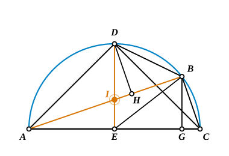
Appendix Geometrica · Proposition I · Theorem I (Tab. 8, Fig. 68)
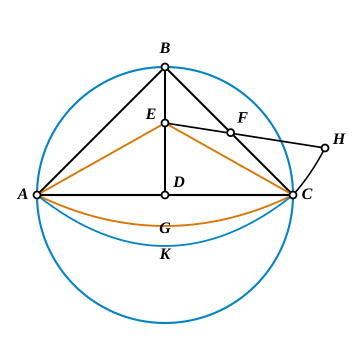
Proposition II · Theorem II (Tab. 8, Figs. 69–70)
Proposition III · Theorem III (Tab. 8, Figs. 69–70)
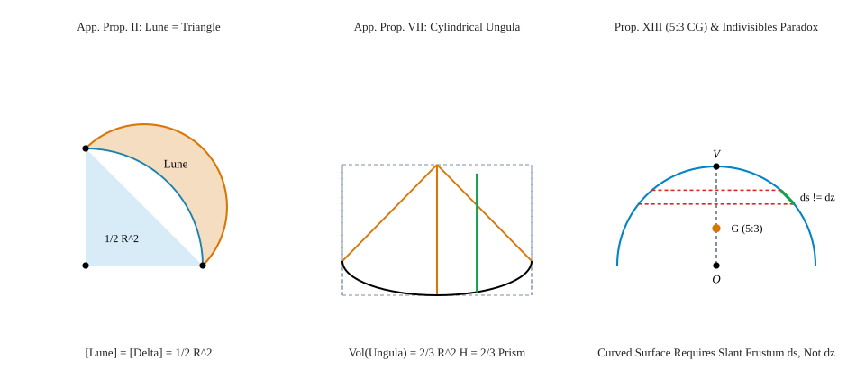
Appendix Geometrica editionis Mediolanensis anni MDCLXXVIII (pp. 61–83; folia 0078–0100), vnà cum Imprimatur, Colophone Ludouici Montiae (0101–0102), & decem Tabulis aeneis (0103–0126).
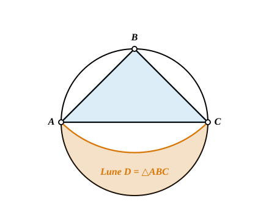
Proposition IV · Theorem IV (Tab. 8, Fig. 71)
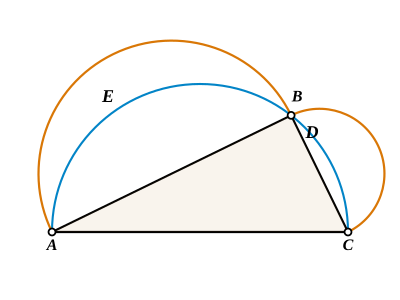
Proposition V · Theorem V (p. 66, Tab. 8, Fig. 72)
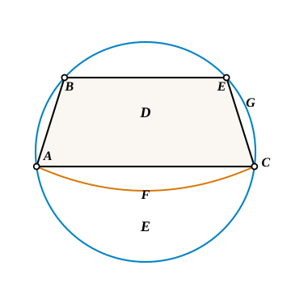
Proposition VI · Theorem VI (pp. 66–67, Tab. 8, Fig. 73)
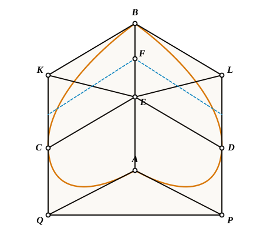
Proposition VII · Theorem VII (pp. 67–69, Tab. 9, Fig. 74)
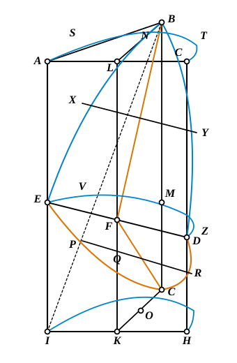
Proposition VIII · Theorem VIII (pp. 70–71, Tab. 9, Fig. 75)
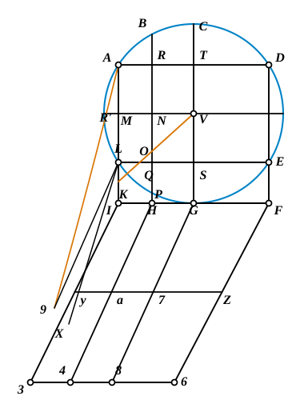
Proposition IX · Theorem IX (pp. 71–73, Tab. 9, Fig. 76)
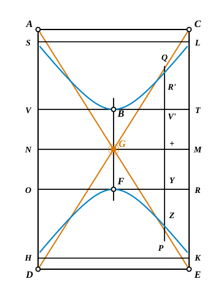
Proposition X · Theorem X
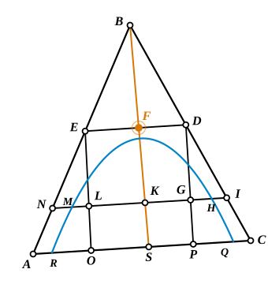
Proposition XI · Theorem XI (pp. 75–76, Tab. 10, Fig. 78)
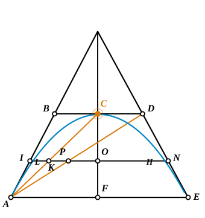
Proposition XII · Theorem XII (pp. 76–77, Tab. 10, Fig. 79)
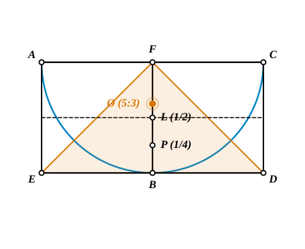
Proposition XIII · Theorem XIII (pp. 77–78, Tab. 10, Fig. 80)
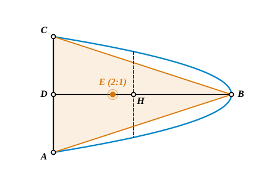
Proposition XIV · Theorem XIV (pp. 78–79, Tab. 10, Fig. 81)
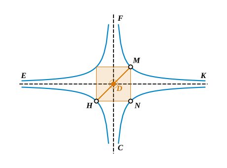
Proposition XV · Theorem XV
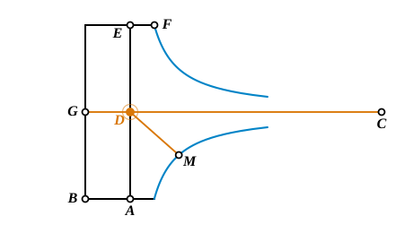
Proposition XVI · Theorem XVI
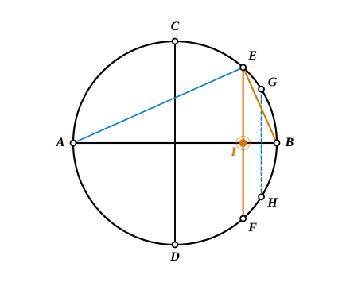
These theorems, several of which I had deduced from geometric principles, I have demonstrated more expeditiously by Cavalieri’s method, although Luca Valerio, the subtlest Archimedes of our age, long ago explored geometrically the centers of gravity of a hemisphere and a parabolic conoid. I confess that the method of indivisibles is a great shortcut in geometry, especially in measuring solids, however irregular—a work full of windings if we wish to use geometric reasonings. Yet one must proceed cautiously, for it happens not rarely that Cavalieri’s reasoning fails altogether, especially regarding surfaces of round solids: behold an example.

I M P R I M A T U R.

Ten Folding Copperplate Plates (Tab. I–X, Figs. 1–85)